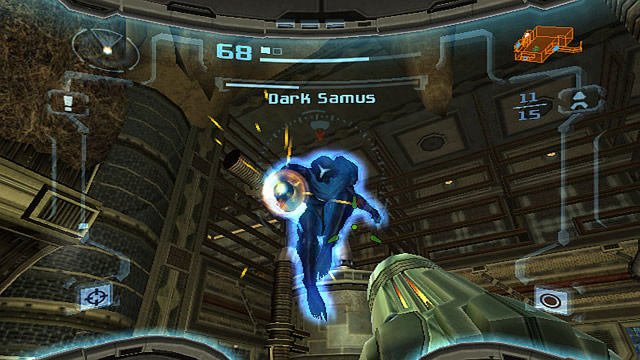
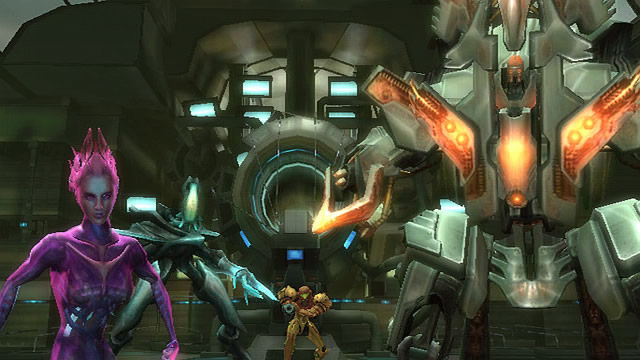
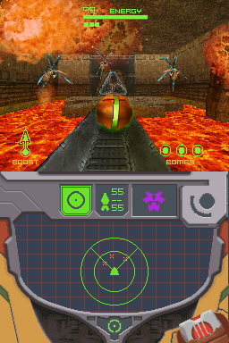

La serie di Metroid Prime, come la serie originale Metroid, e' ambientata in un mondo aperto connesso da ascensori.
Il giocatore ha il compito di esplorare il mondo di gioco in modo da ottenere diversi potenziamenti della tuta in modo da
poter accedere a nuove aree.
Fra gli elementi ripresi dalla controparte 2D originale ritroviamo l'esplorazione, il backtracking e il movimento su piattaforme.
Fra gli elementi che contraddistingono la saga Prime troviamo la prospettiva in prima persona all'interno dell'elmo di Samus.
L'HUD, conosciuto all'interno del gioco come Visore Lotta, offre informazioni basilari al giocatore, come la quantita' di energia,
il numero di espansioni di energia (i Tank Energia) ottenuti, il conteggio dei missili, la barra del pericolo e i missili e visori ottenuti.
Tra i punti di forza della serie Prime ritroviamo proprio i visori: Introdotti in Super Metroid, la serie Prime espande il loro concetto ad un nuovo livello.
Il Visore Scan ha un ruolo cruciale nell'intero gioco: Con questo visore Samus è in grado di analizzare l'ambiente circostante alla ricerca di informazioni.
Il Visore Scan può inoltre interfacciarsi con i terminali dei computer, attivare gli ascensori e rileva informazioni critiche come le debolezze dei vari nemici che Samus può incontrare.
Il giocatore inoltre può ottenere altri visori dipendentemente dal gioco, come il Visore Termico in Metroid Prime e il Visore Oscurita' in Metroid Prime 2: Echoes.

Il focus principale della serie è l'esplorazione. Il giocatore deve esplorare il mondo o la galassia per poter svolgere gli incarichi della Federazione Galattica,
per poter ottenere potenziamenti per la tuta e per sconfiggere boss e miniboss, alcuni dei quali doneranno al giocatore un potenziamento.
In modo da impedire al giocatore di bloccarsi durante l'esplorazione, il gioco possiede un sistema che offre alcuni suggerimenti sui luoghi da visitare in base ai potenziamenti ottenuti.
Il gioco inoltre include una mappa 3D del gioco che permette di pianificare i propri movimenti con precisione.
Diverse armi e oggetti tornano dalla serie originale, come la Morfosfera, il Raggio Ricarica, le Bombe Morfosfera e altri. I potenziamenti ottenibili cambiano in base al titolo giocato.
Nonostante l'intero gioco sia riprodotto in prima persona, il passaggio a Morfosfera renderà la visuale in terza persona. In questa forma Samus può accedere in luoghi altrimenti non accessibili
e può utilizzare le Bombe Morfosfera e Giga Bombe. In alcune aree la visuale della Mosfosfera può cambia da 3D a 2D.

I controlli cambiano in base alla console utilizzata.
Metroid Prime e Metroid Prime 2: Echoes, nonostante possiedano un controller con doppio analogico, utilizzano un sistema di movimento diverso da quello di altri shooter.
Il giocatore controlla Samus solamente con l'analogico sinistro ed è in grado di mirare mantenendo costante la pressione del tasto R. Quando mira Samus non è ion grado di muoversi.
Premendo il tasto L è possibile agganciare la visuale di Samus ad un preciso nemico in modo da poterlo mirare in completo movimento. Tenendo premuto il tasto L e muovendosi il giocatore girerà intorno al nemico selezionato.
Tramite il tasto X il giocatore può cambiare forma tra la principale la Morfosfera, mentre tramite iltasto B è in grado di saltare e, mirando ad un nemico, di schivare un attacco nella direzione selezionata.
Utilizzando lo stick C e il D-pad il giocatore è in grado di cambiare visore e arma.
Metroid Prime 3: Corruption e Metroid Prime Trilogy, essendo su Nintendo Wii, utilizzano il Telecomando Wii abbinato al Nunchuck per poter giocare.
Con il Telecomando Wii è possibile mirare puntando il controller nella direzione desiderata e si è in grado di muoversi con l'analogico presente sul Nunchuck. A differenza dei primi due titolo il giocatore può muoversi mentre mira.
Tenendo premuto il tasto Z posto sul Nunchuck è possibile agganciare la visuale di Samus ad un preciso nemico in modo da poterlo mirare in completo movimento.
Tramite il tasto C il giocatore può cambiare forma tra la principale la Morfosfera, mentre tramite il tasto B è in grado di saltare e, mirando ad un nemico, di schivare un attacco nella direzione selezionata.
Utilizzando i pulsanti + e - presenti nel telecomando il giocatore è in grado di cambiare visore e arma.
Metroid Prime Hunters, essendo su Nintendo DS, ha un suo sistema di gioco riadattato per la console portatile Nintendo.
Il giocatore è in grado di spostarsi tramite il D-pad e di ruotare la telecamera tramite l'utilizzo del pennino nello schermo inferiore. Non è possibile mantenere una mira precisa sui nemici.
Tranne il comando per attaccare, risposto al tasto R della console, la maggior parte dei comandi sono presenti sul touch screen della console.
Per la trasformazione in modalità Morfosfera è presente un'icona apposita nella parte bassa a destra dello schermo, e per l'attivazione del Visore Scan è presente un'icona nella parte superiore dello schermo.
Per poter saltare il giocatore deve premere due volte in rapida successione lo schermo touch.
Ogni gioco della serie offre diversi finali, principalmente dipendenti dalla quantità di oggetti e scan raccolti.